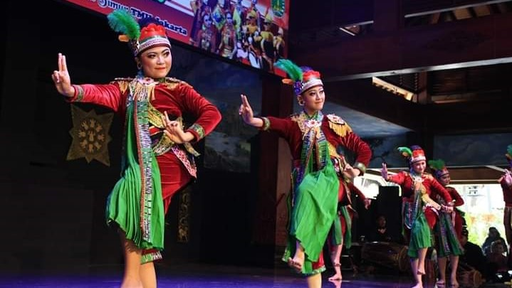
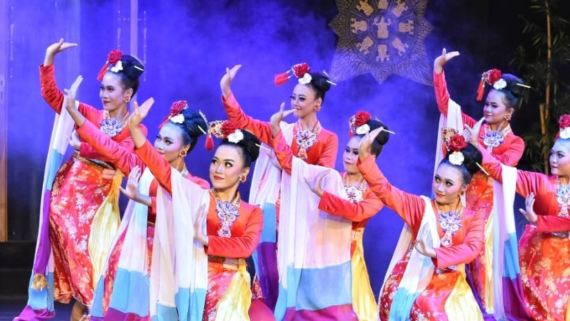

Kelas Terpopuler
Kelas Tari Spesial

Expert

GRATIS
Tari Takruk Maru
Tarian yang menceritakan suka duka gadis yang dimaru (istri selir) yang mana juga merupakan bentuk propaganda
4.8 Ratings

Intermediate
GRATIS
Tari Trajeng
Tarian yang mengangkat emansipasi wanita (Trah Kinjeng - Silsilah kerabat Nyai Roro Kinjeng) di Kota Pasuruan
5.0 Ratings
Beginner

GRATIS
Tari Terbang Bandung
Tarian yang sering dijadikan simbol di Kota Pasuruan yang merupakan perkembangan dari seni hadrah.
4.0 Ratings